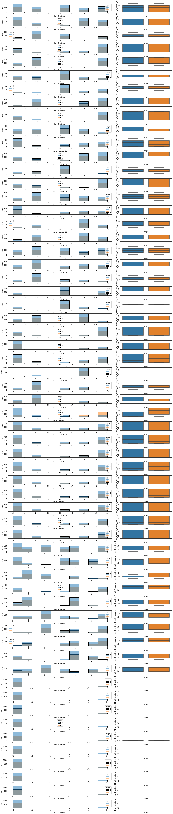
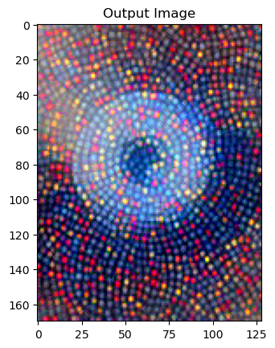

Data-Science
Site
Linear Analysis Notebooks
Create a bootstrapped t_test function and show it off using the iris data set
An example of a use of groupby apply to apply a model to a set of individual groups
Random Walk
Looking at how adding an extra feature with varying levels of relevance effects the r2_score
Machine Learning Notebooks
Gower clustering
Multiclass example 1.
Multiclass example 2.
Binary example
Machine Learning Workflow
Stress prediction based on biometrics data
Read in data
Exploratory Data Analysis (EDA)
Creating synthetic ordinal data
Shuffle the target so there are no variables which have a perfect classification
Using a toy dataset to better understand SHapley Additive exPlanations (SHAP)
Neural Transfer Using PyTorch
NLTSA Notebooks
first order and second order ordinary differential equations (ODE)s
1st order ODE
2nd order ODE
Methodology
Plot all of the time series levels of the FACS
Methodology
scikit-identification Example
Looking for patterns in grand mal seizures
Context
About Tubular Sclerosis
Testing out rolling smoothing functions
Page
Welcome to an assortment of Data-Science notebooks by James Twose
Linear Analysis
Machine Learning
NLTSA
Search
Welcome to an assortment of Data-Science notebooks by James Twose
¶
Linear Analysis
¶
Linear Analysis Notebooks
Create a bootstrapped t_test function and show it off using the iris data set
An example of a use of groupby apply to apply a model to a set of individual groups
Random Walk
Looking at how adding an extra feature with varying levels of relevance effects the r2_score
Machine Learning
¶
Machine Learning Notebooks
Gower clustering
Machine Learning Workflow
Stress prediction based on biometrics data

Creating synthetic ordinal data
Using a toy dataset to better understand SHapley Additive exPlanations (SHAP)

Neural Transfer Using PyTorch
Penguins Data Drift Report
NLTSA
¶
NLTSA Notebooks
first order and second order ordinary differential equations (ODE)s
Methodology
Methodology
scikit-identification Example
Looking for patterns in grand mal seizures
Testing out rolling smoothing functions
Search
¶
Search Page